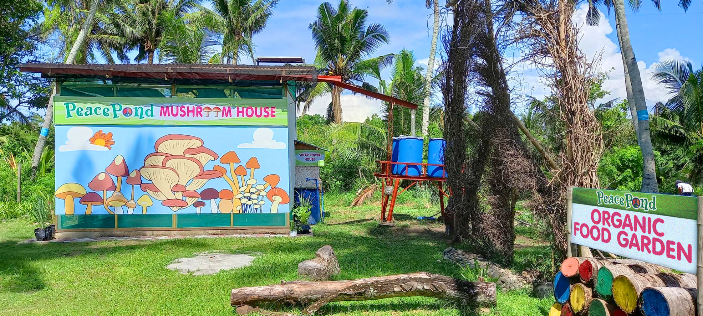
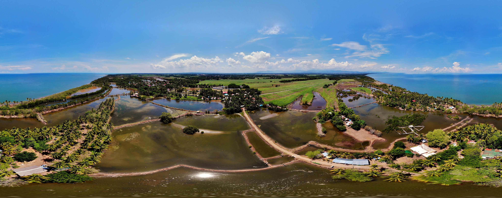

Secure a spot for the event now, REGISTER HERE
In 2019, PeacePond initiated the Blastik Project, a collaboration with a soft drinks company. This comprehensive plastic bottle collection and recycling endeavor transforms discarded plastic into durable items such as bowls, tiles, walk pavers, candle holders, and various lifestyle articles. The process, easily replicable with the right equipment, can be implemented in barangays, villages, local government units (LGUs), organizations, and small businesses. Jet and Checcs, in their commitment to reducing plastic waste in communities, actively engage in workshops and training sessions to educate the public. Leveraging their knowledge and experience, they decided to harness the ultimate renewable resource: Filipino ingenuity and creativity.
PeacePond in Binalbagan is more than an hour and a half away from Bacolod City but for those who are pro-environment and Pro-Earth, this trip is definitely worth the visit.
Early dinner at Lanai by fresh Start.
Last flight is advised.


Copyright 2023 Philippines Department of Tourism